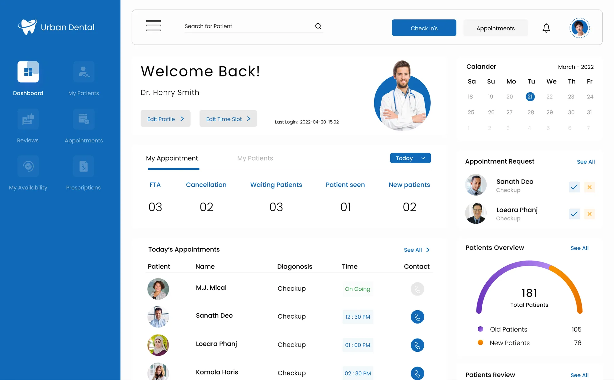
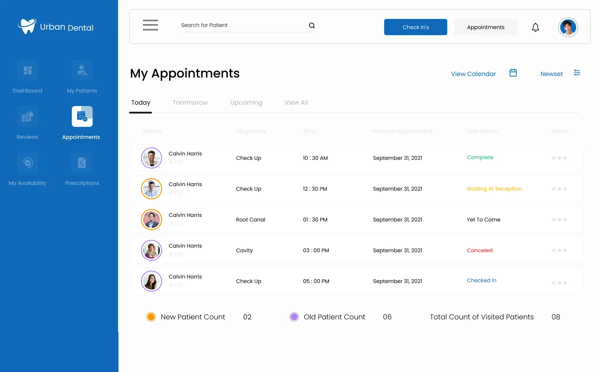
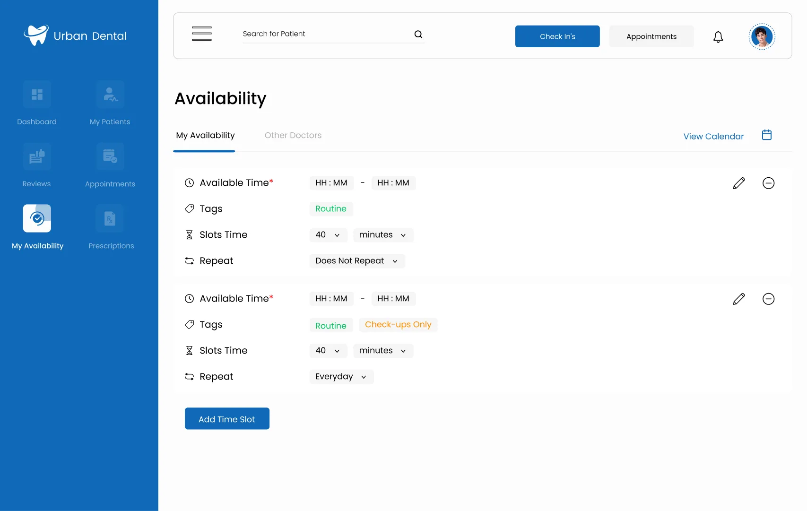
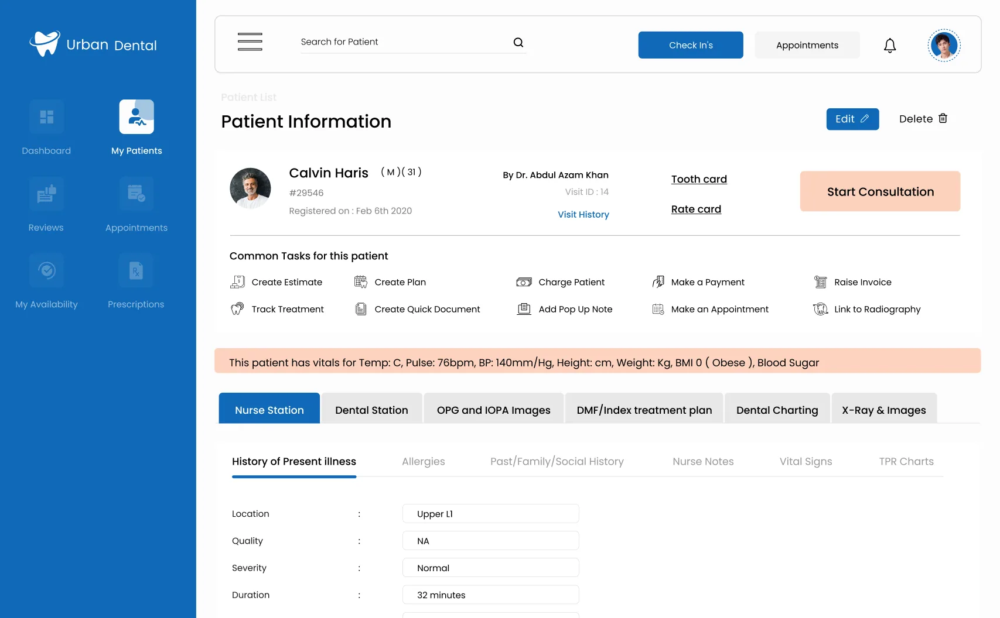
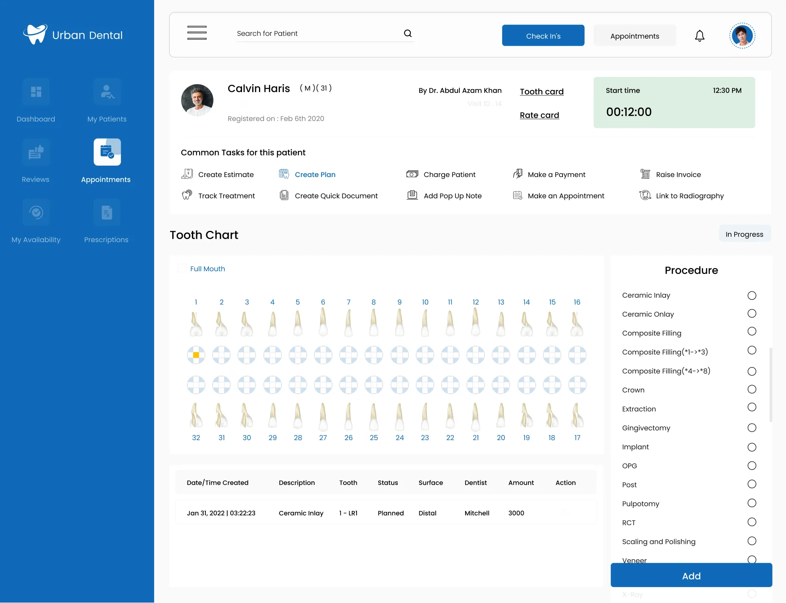
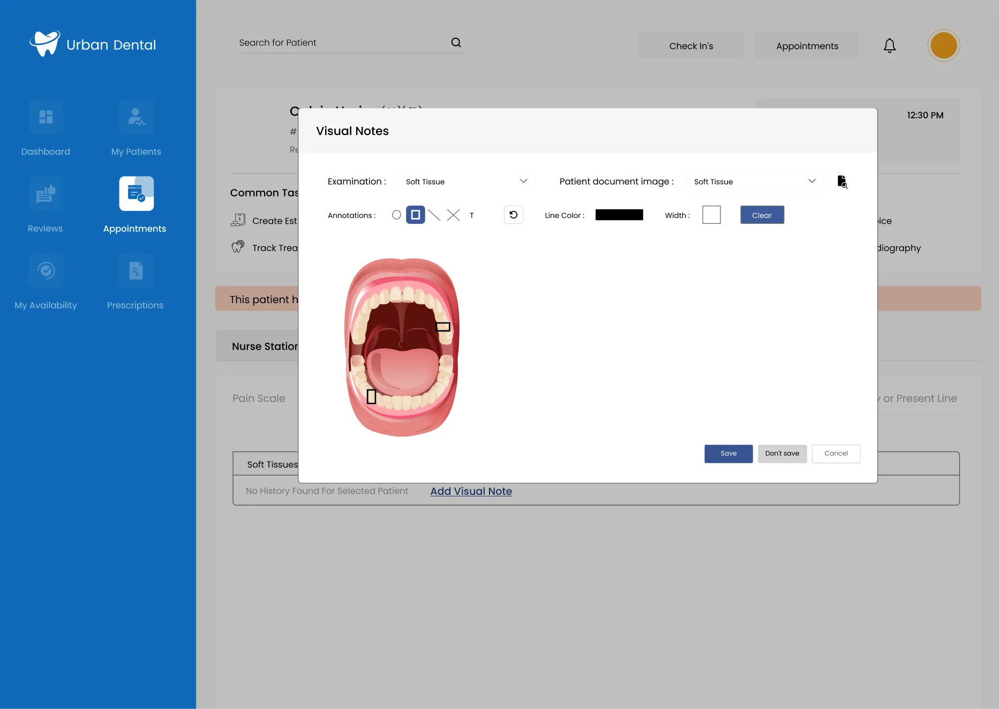

Urban Dental
A clinic management tool that puts a dentist's appointments, availability and patients in one place, so the day runs on the screen instead of on paper.

The problem
Running a small dental practice means running two jobs. Alongside treating patients, the dentist schedules appointments, keeps patient records and chases payments, and most of it happens on paper.
Patients feel the other side of it: booking takes effort, and their schedule rarely lines up with the clinic's.
It'll be easier if we have the patient profile, their complaint, or a photo of their mouth.
It's hard to suit my schedule with theirs.
Process
Who it's for
The tool is built around the dentist who runs the practice.
A young dentist in London who recently opened her own practice. Without a large trained staff, she treats patients and also handles the scheduling, the paperwork and the conversations about cost.
- 15+ hours of paperwork every week
- Unsure how to earn good reviews and improve the clinic
- No clear way to tell patients what they owe and get paid
- Less time on paperwork
- A simple way to explain costs and payment plans
- A view of how the practice is doing
The web app
Blue and white throughout, for the calm, clean feel people expect from a medical product, set in Poppins.
Today's, tomorrow's and upcoming bookings in one list. Each shows its status, from waiting in reception to complete.

The dentist sets the hours they can be booked, how long each slot runs and how often it repeats. This answers the scheduling problem patients described.

Each patient's profile, vitals and history in one place, with the common tasks one click away. It replaces the paper records.

During the consultation
Two screens built for the chair. They are the parts of the tool that only a dental product needs.

The dentist picks a tooth and a procedure, and the treatment plan builds up underneath.

A photo of the patient's mouth that the dentist can mark up. This is the photo the co-assistant asked for in research.
What the review changed
I shared the prototype with my team and asked what could be improved, and how it looked and felt to use.